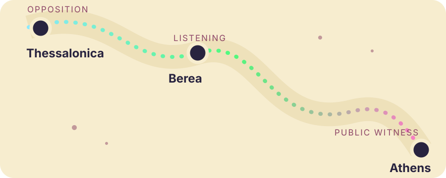

What happens when the gospel enters a culture that already has answers?
Faith, philosophy, and the resurrection in the heart of the ancient world
A city already full of answers
Athens: wisdom with a skyline
Why Athens mattered
Greek city in Attica, near the Aegean Sea.
Connected to the wider Mediterranean through Piraeus.
Under Roman rule, but still famous for its history and schools.
Known for temples, public debate, philosophy, and artistic achievement.
AcropolisReligious and artistic identity rising above the city.
AgoraPublic life, commerce, conversation, and debate.
Paul’s audience
Paul is not speaking to people who lack religion or intelligence. He is speaking to people who already have sophisticated explanations of the universe and human life.
Athens represents the intellectual confidence of the ancient world.
Places and people
The world behind Paul’s conversation
Acropolis
The high center of Athens, filled with major temples.
Parthenon
Temple dedicated to Athena, the city’s patron goddess.
Agora
Marketplace and public center for meeting, teaching, and debate.
Areopagus
Rocky hill and respected council linked with authority and judgment.
Socrates · Plato · Aristotle The remembered teachers of questions about truth, justice, virtue, knowledge, and reality.
Epicurus · Zeno Later schools offering rival accounts of the gods, nature, death, and the good life.
From conflict to Athens
Paul arrives while waiting and watching

1
ThessalonicaOpposition grows around the announcement of Jesus as another king.
2
BereaPeople listen, but opponents follow and create further danger.
3
AthensPaul waits for Silas and Timothy, then begins observing and speaking.
This is not a planned academic lecture tour. Paul enters Athens amid conflict, uncertainty, and isolation.
Epicureanism and Stoicism
Two schools, two visions of reality
Epicureanism · freedom from fear
Reality
Atoms and empty space.
The gods
Distant and uninvolved.
Good life
Peace, calm, and freedom from disturbance.
Death
No divine punishment; do not fear it.
History
No ultimate divine purpose.
Stoicism · virtue in an ordered world
Reality
A rational, ordered universe.
The gods
Present throughout the cosmos.
Good life
Virtue and harmony with nature.
Death
Part of a larger rational order.
History
Often understood through recurring cycles.
Both schools ask serious questions. Paul can meet those questions, but he challenges their accounts of Creator, accountability, history, and resurrection.
Paul as a cultural interpreter
Flexible in language, firm in the gospel
Paul is simultaneously a Jewish interpreter, a Greek-speaking communicator, a Roman citizen, and a public debater.
1 · ObserveStudy the culture carefully.
2 · ConnectFind genuine points of contact.
3 · TranslateUse language people can understand.
4 · ChallengeExpose assumptions that fail.
5 · AnnounceLead toward Creator and resurrection.
Paul understands Athens without becoming Athenian.
Acts 17:22–31
At the Areopagus: from altar to resurrection
1DevotionPaul recognizes that Athens is deeply religious.
2Unknown godHe uses an altar as a starting point.
3CreatorGod made heaven, earth, and everything within them.
4DependenceHuman beings receive life and existence from God.
5IdolsGod cannot be contained by buildings or represented by images.
6RepentanceGod calls people to turn from ignorance.
7JesusGod will judge the world through the risen Jesus.
Paul begins with familiar Athenian language but ends with a distinctly Christian announcement.
Wright’s main focus
The Creator is not another god
Athenian assumptions
Many gods, temples, images, civic rituals, and human attempts to understand or manage the divine world.
→
Paul’s proclamation
One Creator God gives life to all, cannot be reduced to an image, remains sovereign over creation, and will judge the world through Jesus.
God is not one more figure inside the system. God is the source of the whole system.
The decisive Christian claim
The resurrection reorders history
ἀνάστασις
anastasis · resurrection
Not merely the soul continuing, but God raising Jesus bodily and beginning the renewal of creation.
EpicureanismDeath ends personal existence; fear of it should be removed.
StoicismThe universe is ordered by reason and may move through cycles.
PaulGod moves history toward judgment, resurrection, and renewal.
The gospel is not merely a new intellectual theory. It is an announcement about an event.
Three responses
Athens listens, laughs, and believes
✦
Mockery
Some reject the idea of resurrection.
?
Curiosity
Some want to hear Paul again.
✓
Faith
Some believe, including Dionysius and Damaris.
Dionysius An Areopagite connected with Athens’s civic or intellectual leadership.
Damaris A woman named by Acts among those who respond positively.
Wright measures Paul’s faithfulness by the truth of his witness, not only by visible success.
What Athens teaches
Understand culture. Speak clearly. Keep the resurrection central.
Listen deeply Notice the questions people are already asking.
Connect honestly Begin with shared language without stopping at agreement.
Announce boldly Human wisdom reaches its limit at the Creator and the risen Jesus.
Paul understands Athens without surrendering the gospel to Athens.
Based on Acts 17:16–34 and N. T. Wright, Paul: A Biography, chapter 8, “Athens.”